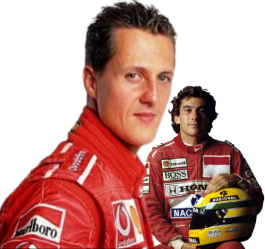
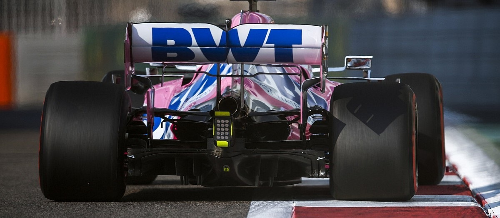

LA REVISTA ESPAÑOLA CIEN POR CIEN DE FÓRMULA 1
Ralf Schumacher
¿Puede doblegar a Montoya y luchar por el titulo?
Carlos Reutemann
La historia inédita del gran enigma de la Fórmula 1
Mika Hakkinen
Desciframos lo que hay detrás de su retirada
F1 RACING
50 AÑOS DE CAMPEONES
¿QUIÉN ES EL MEJOR?
¿SCHUMACHER, SENNA, FANGIO O... CLARK?
ORIOL SERVIA
Entre la CART y el cielo

